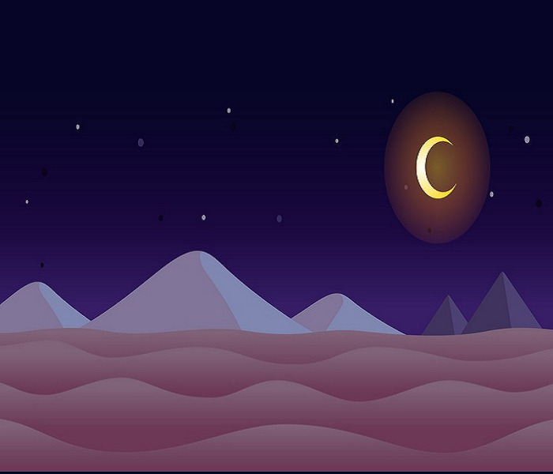

Controls:
- Movement: Arrow keys
- Shoot: Spacebar
- Restart game: R
Rules:
Embark on an epic space adventure in Galactic Warrior, inspired by the classic Space Invaders. Navigate your spaceship through enemy projectiles and dangerous meteors while striving to survive. Your goal: score as many points as possible while skillfully avoiding obstacles and aiming with precision shots. Immerse yourself in various difficulty levels, from easy to hard, each offering a unique gaming experience. Customize your gameplay in the menus, wisely choose your battlefield and spacecraft. Get ready for an adrenaline-filled journey in the Galactic Warrior universe!
During the game, the player has 3 lives. Using the left and right arrow keys,
you must dodge incoming projectiles aimed towards them. Additionally,
you must watch out for vicious meteor attacks ().
Failing to avoid these hazards results in the player losing a life.
The game ends when the player loses all lives or eliminates all enemies.
Moreover, there are opportunities to collect falling bonus items, known as drops,
which can assist in various ways ().
With gift1, you gain +1 life ( ).
Acquiring gift2 grants +200 points.
).
Acquiring gift2 grants +200 points.
 How to earn score?
How to earn score? 
-
Shooting enemy:
- + 10 points :

- + 20 points :
- + 30 points :

- + 40 points :
- + 50 points :
- + 50 points :
- + 200 points :
- + 1000 points :
- + 10 points :
-
Picking up drops:
- + 200 points :

- + 200 points :
-
Extra life bonuses:
- + Each life is worth an additional 50 points at the end of the game, so collect them ()
The HIGHSCORE section tracks your progress throughout the five levels of Galactic Warrior. Each level presents unique challenges and enemies, testing your skills as you advance through the game. Don't worry about losing your score—your high scores points are automatically saved in your browser, ensuring that your progress carries over into future games. This means you can return anytime and continue striving for the highest score across all levels!
The DESCRIPTION section provides a historical overview of the Galactic Warrior game. It details the Space Invaders game, released in 1978, which became an iconic arcade game known for its addictive gameplay and pixelated graphics. The description explains how Space Invaders inspired the development of Galactic Warrior, showcasing its origins and the various levels and challenges within the game.
The SOUND section allows players to toggle the game sound on and off, as well as adjust the volume. Players can easily manage the sound settings to customize their gaming experience.
In the COSTUMIZATION section, players can customize their gaming experience. Here, they have the option to choose the colors of their player's and enemy's lasers, as well as the spaceship they want to play with. Additionally, they can select different battle fields to make the game even more thrilling. However, certain ships and fields are locked initially and can be unlocked by spending a certain amount of rubies, the in-game currency.
Each spaceship and battlefield offers a unique experience, however they require rubies to unlock. Rubies can be earned through gameplay or obtained through other in-game activities.
Choosable ships:
- Azure Vortex (Free)
- Emerald Wing - 50 Rubies

- Titanium Dragon - 75 Rubies
- Scarlet Phoenix - 100 Rubies
Choosable fields:
- Space - (Free)
- Desert - 50 Rubies 
- Cosmic - 100 Rubies

- Earth - 150 Rubies
How to Earn Rubies?
Rubies are the in-game currency that you can use to unlock new spaceships and battlefields in the customization menu. Earning rubies is essential to enhance your gaming experience and explore all the unique options available.
Rubies are primarily earned by completing levels in the game. There are five levels in total, and each level rewards you with progressively more rubies as you advance. Each level has a specific difficulty ranking:
- Level 1 (Easy): Complete this level to earn 50 rubies.
- Level 2 (Normal): Earn 75 rubies by completing this level.
- Level 3 (Normal): Finish this level to receive 100 rubies.
- Level 4 (Hard): Conquer this level to gain 125 rubies.
- Level 5 (Brutal): Defeat the final boss in this level to earn 150 rubies.
As you advance through the levels, the difficulty increases, making the game more challenging and rewarding. The final level, Level 5, features a secret boss fight where your skills will be truly tested. Successfully defeating the boss will earn you the highest ruby reward of 150 rubies.
The difficulty progression is as follows: Easy, Normal, Normal, Hard, and Brutal. Keep playing, master the challenges, and accumulate rubies to unlock all the customization options available!
Browser compatibility:
- Chrome: 29.0.0
- Firefox: 81.1.0
- Opera: 16.0.1
- Edge: 12.0.0